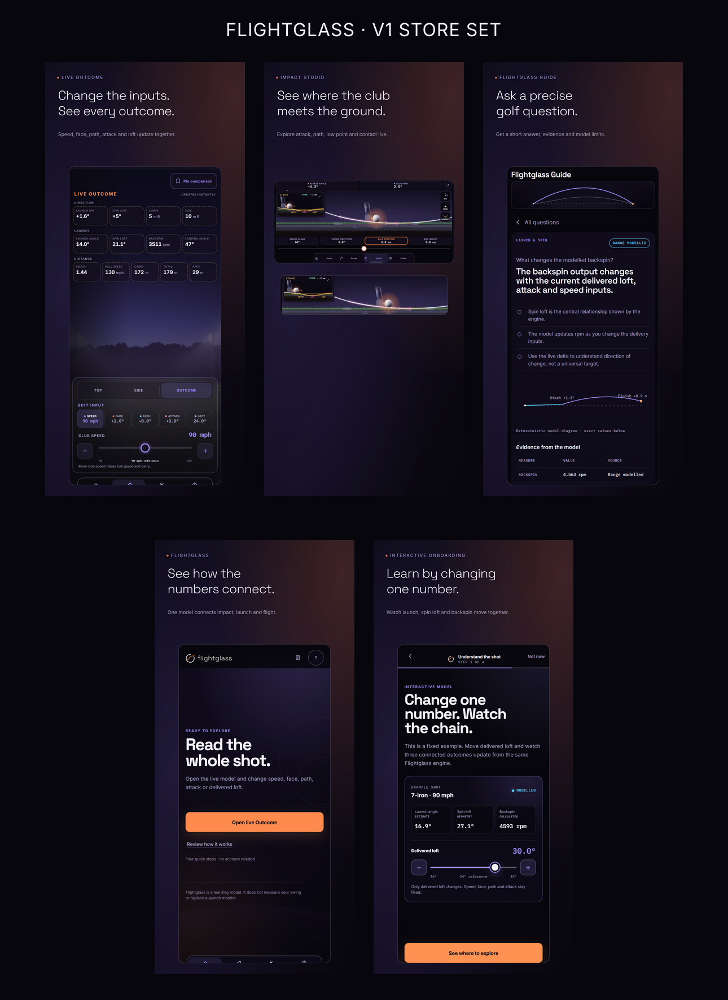

Én idé: alle golf-apper er dagslys og gress-grønt — Flightglass er natten. Og galleriet er ETT golfslag: ember-tråden flyr fra teen i skudd 1, buer på topp gjennom 3D-panoramaet (skudd 5–6), og lander i skudd 9. Sveip settet = se ett slag fly. Skudd 5–6 er ÉN bred 3D-scene delt over to portrett-slots på appens egen panel-skillelinje (sømmen er usynlig).
Kontaktark — hele flukten i én stripe

Tråden binder alle ni sammen — panorama-paret (5–6) i midten er én scene